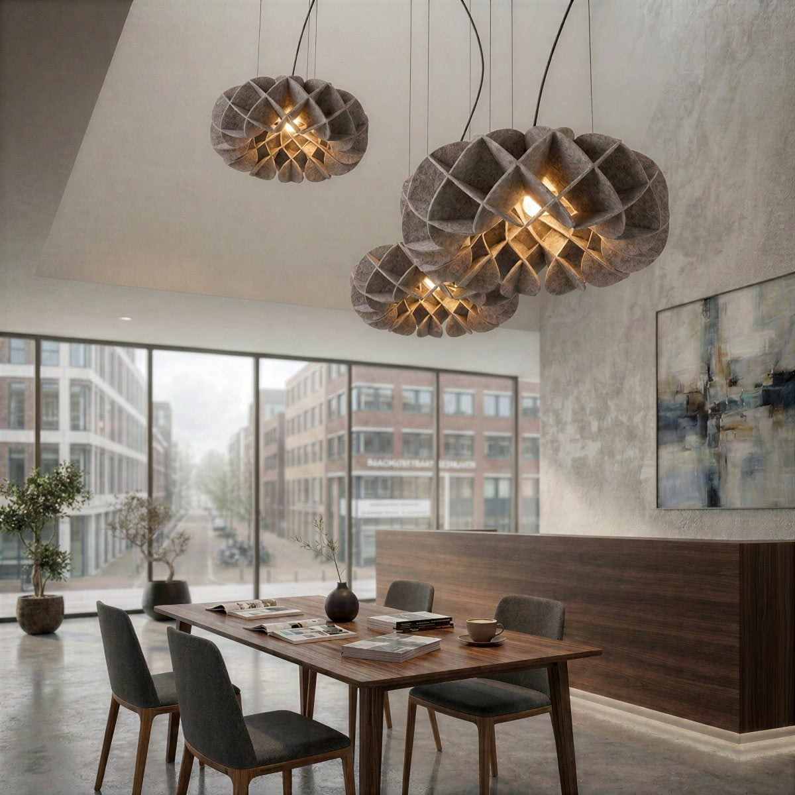
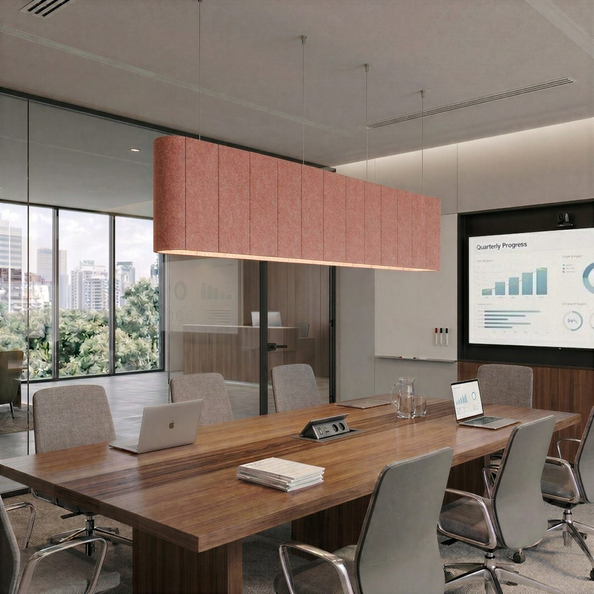
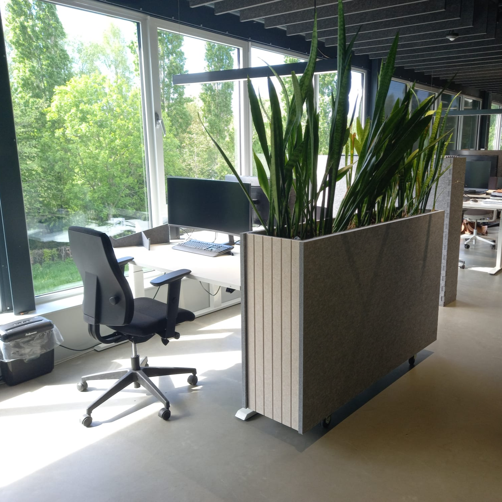
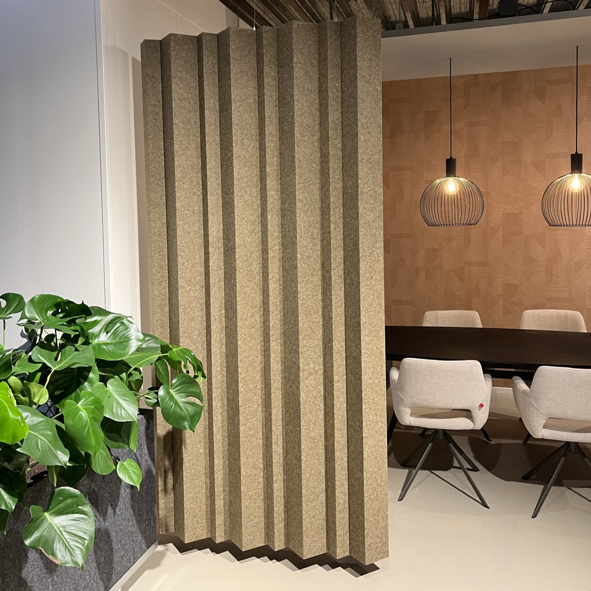
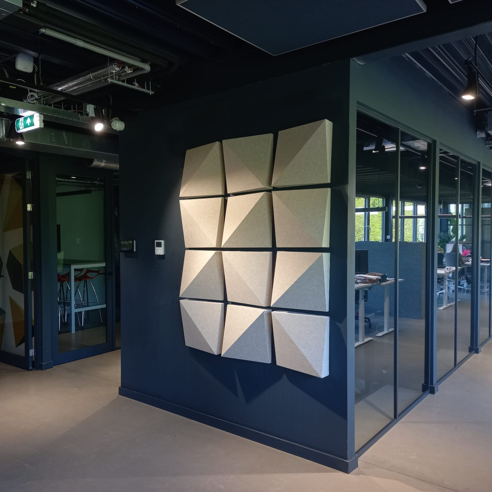

2024-present · EASYfelt
From felt
to space.
A public selection of acoustic products that turns PET felt into lighting, room dividers, wall systems and furniture.
One material,
many behaviours.
My work at EASYfelt moves between concept, product development and R&D. This selection shows how a single material can become a sculptural lamp, a room-defining element or a modular acoustic surface.
Rather than presenting every project separately, the collection is organised as a material atlas: from folded sheet to volume, then into the room.
Material atlas
Fold
volume
space.
Six released products, arranged by the way they transform felt.

Luma FioraLight as an acoustic object
Luma JapandiLight as an acoustic objectLuma IngranaLight as an acoustic object
Planter 2.0Furniture for acoustic space
Rhythm Divide FoldSoft spatial rhythm
Foldatile SplitModular acoustic surfaceDesigned for
real interiors.
The products balance acoustic performance with atmosphere, easy specification and a clear visual identity. Each object needs to work at the scale of a room as well as in the hands of the people who install, configure and live with it.
This public collection intentionally focuses on released products. Confidential development work and customer-specific projects remain private.